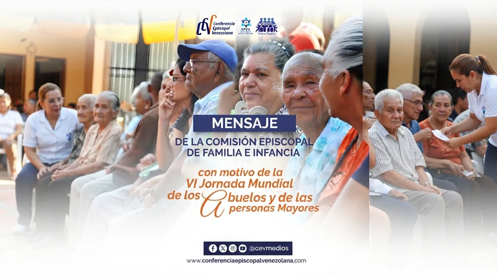
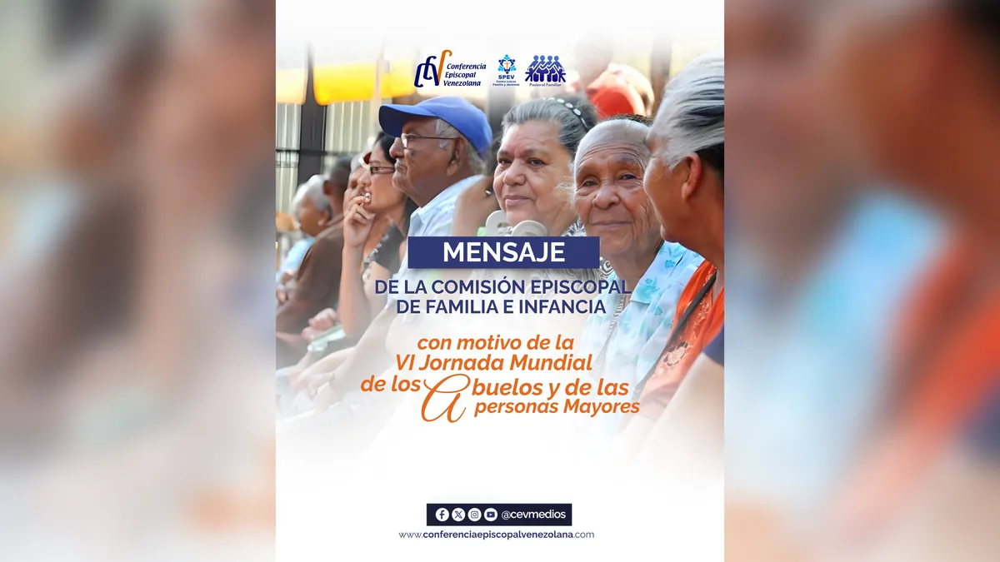

VI Jornada Mundial de los Abuelos y de los Mayores
Mensaje de la Comisión Episcopal de Familia e Infancia con la cita «Yo, en cambio, jamás te olvidaré» (Is 49,15) y dos encuentros virtuales del Área de Familia y Vida sobre los adultos mayores.

Datos del evento
- Fecha
- Domingo 26 de julio de 2026; dos encuentros virtuales posteriores
- Modalidad y lugar
- Presencial y virtual · Parroquias del país y encuentros virtuales
- Organiza
- Comisión Episcopal de Familia e Infancia y Área de Familia del Centro
- Estado
- Realizado
Cómo fue
El domingo 26 de julio, en las parroquias, se celebró la VI Jornada Mundial de los Abuelos y de los Mayores. El 27 de julio la Comisión Episcopal de Familia e Infancia emitió un mensaje con la cita «Yo, en cambio, jamás te olvidaré» (Is 49,15) y orientaciones para visitar a los mayores que viven solos.
El Área de Familia realizó después dos encuentros virtuales, con apoyo del Dicasterio para los Laicos, la Familia y la Vida, sobre salud mental y respuesta comunitaria tras el sismo del 24 de junio. Según la nota del 3 de agosto, se evaluó el impacto del sismo en la tercera edad y se valoraron iniciativas comunitarias, como las brigadas de acompañamiento y el proyecto Cuidadores 360, de Trabajo y Persona.
Qué se hizo
- Celebraron la jornada en las parroquias el 26 de julio.
- Emitieron un mensaje con orientaciones para visitar a los mayores que viven solos (27 de julio).
- Realizaron dos encuentros virtuales sobre salud mental y respuesta comunitaria tras el sismo.
Quién participó
- El secretario adjunto del Dicasterio para los Laicos, la Familia y la Vida.
- El responsable de la Pastoral de Ancianos de la Santa Sede.
- La directora de Desarrollo Institucional de Trabajo y Persona.
Galería

VI Jornada Mundial de los Abuelos y de los Mayores, Parroquias del país y encuentros virtuales, domingo 26 de julio de 2026; dos encuentros virtuales posteriores. Cartel del mensaje de la Comisión Episcopal de Familia e Infancia por la VI Jornada Mundial de los Abuelos y de los Mayores, con personas mayores sonriendo al fondo. Crédito: Conferencia Episcopal Venezolana. 
VI Jornada Mundial de los Abuelos y de los Mayores, Parroquias del país y encuentros virtuales, domingo 26 de julio de 2026; dos encuentros virtuales posteriores. Afiche del mensaje de la Comisión Episcopal de Familia e Infancia por la VI Jornada Mundial de los Abuelos y de los Mayores. Crédito: CEV Medios, fuente: Comisión Episcopal de Familia e Infancia.